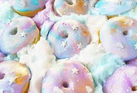

Unicorn Food treats

Unicorns are mythical creatures that need to eat too!.
Ingredients
- 2 eggs
- 1 cup powdered sugar
- 1/8 tsp strawberry extract
- blue,purple,and pink food coloring
Steps
- preheat oven to 175F
- Beat egg whites on high until stiff peaks are formed (about 2 minutes)
- Add 1/2 cup powdered sugar and beat for another 5 minutes until glossy and stiff.
- Gently fold in remaining powdered sugar and the strawberry extract until well combined.
- Separate meringue into 3 bowls
- Add a few drops of food coloring to each bowl
- squeeze the meringue onto a cookie sheet lined with parchment paper.
- Bake at 175 for 2 hours.
- let cool for 10 minutes before serving.
- ENJOY!
Home
Lasagna
Sam's Famous chili
Unicorn Food